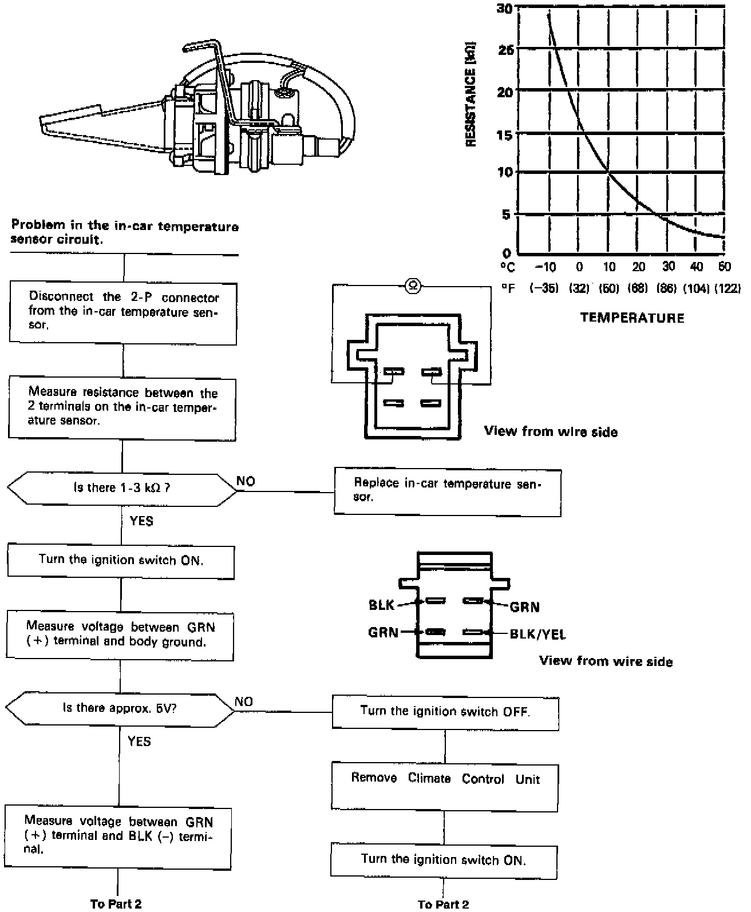
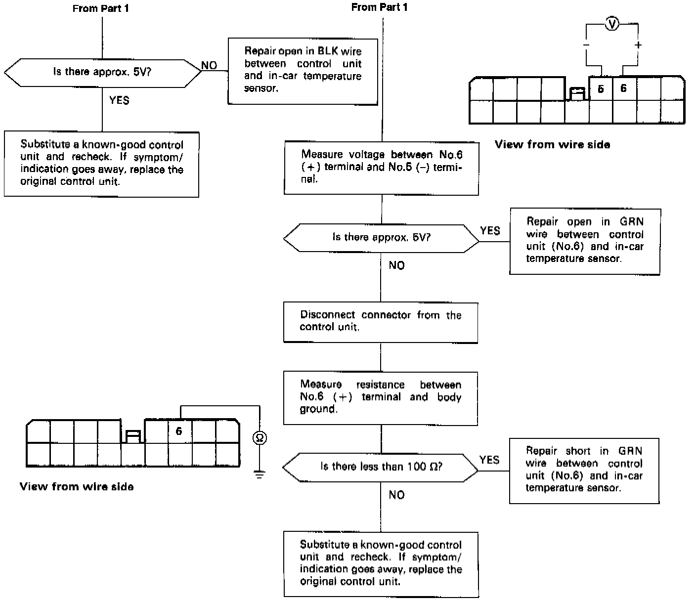

In-Car Temperature Sensor
In-car Temperature SensorSelf-diagnosis indicator light F comes on: Indicates a problem in the In-car Temperature Sensor circuit.
The in-car temperature sensor is a temperature dependant resistor (thermistor). The resistance of the thermistor decreases as the temperature inside the car increases.

